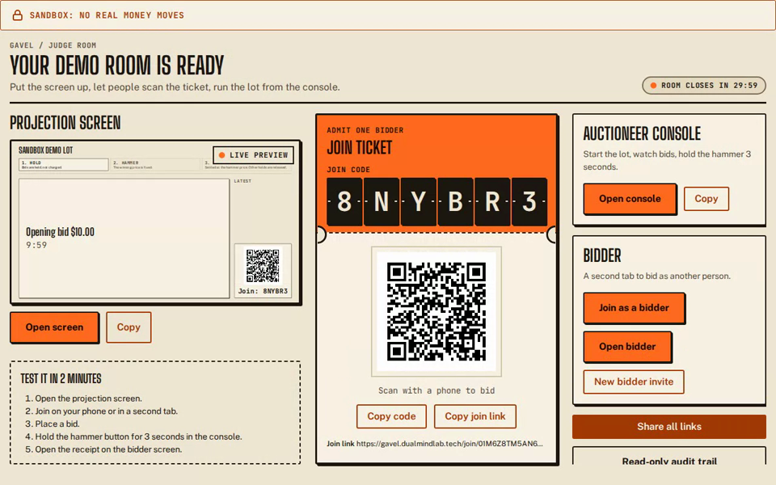
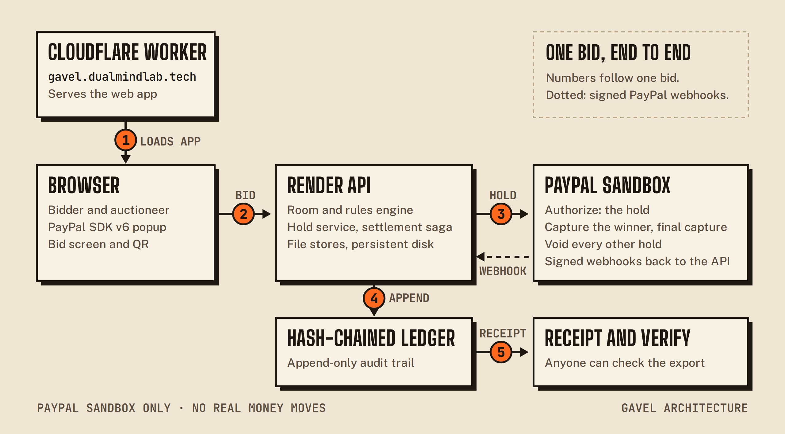
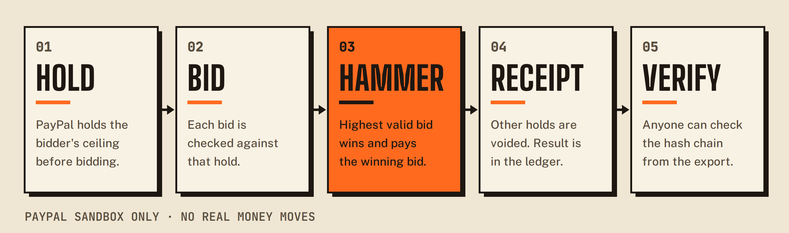
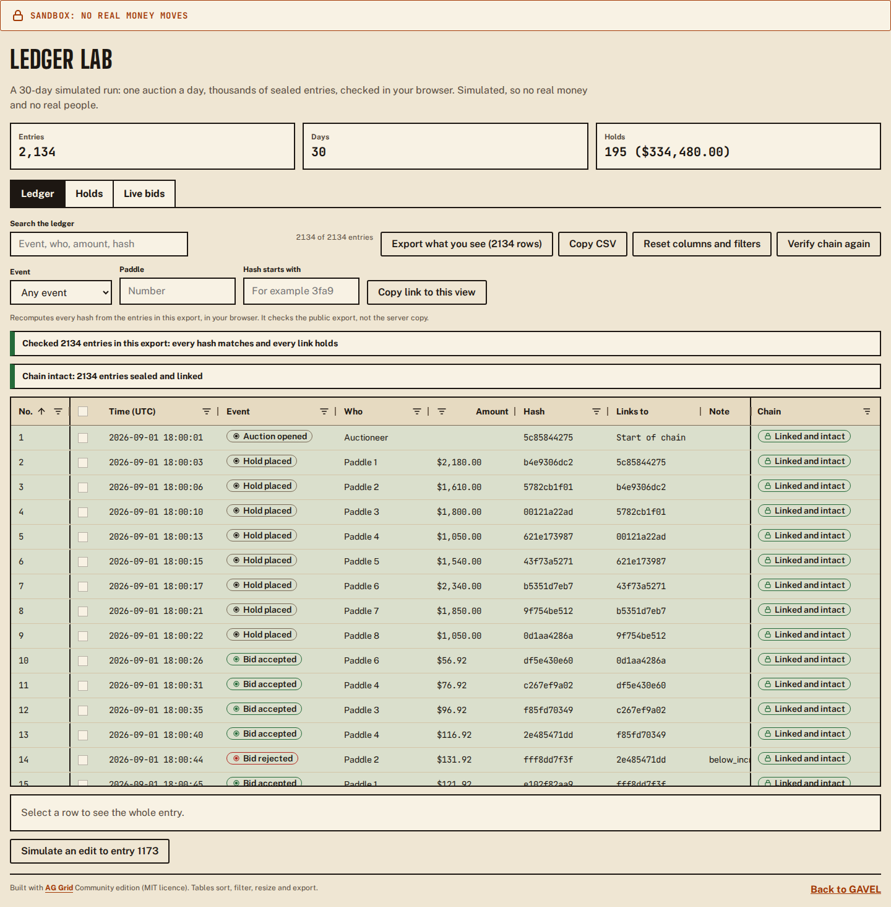
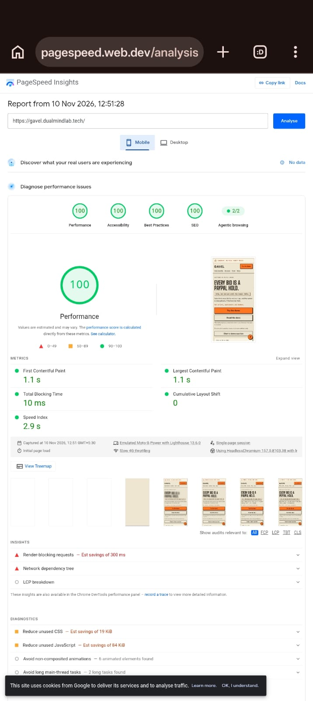
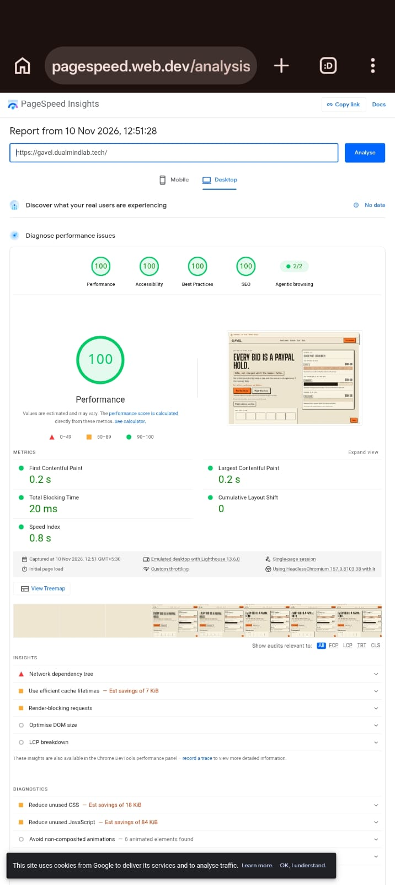

Test GAVEL in five minutes, then check how it is built, how it is secured and what the evidence does and does not prove.
00 / Read this first
This guide is for the judging panel only. It holds the shared judge key and the PayPal sandbox logins, so please keep it inside the panel. The story and the pitch are in the GAVEL deck; this guide is the hands-on and technical companion.
GAVEL in one paragraph
A live auction on PayPal holds. A bidder approves a ceiling as a PayPal authorization: held, not charged. Bids land anywhere under that ceiling. At the hammer GAVEL captures only the winning price from the winner's hold and voids every other hold. Every accepted bid is sealed in a hash-chained ledger that anyone can re-check in a browser.
Everything runs on the PayPal sandbox. No real money moves, and you never need your own PayPal account.
01 / Your access
You need none of this to watch GAVEL work: the scripted demo and a demo room run with no login. Use the logins below when you want a real PayPal sandbox hold, and the key when you want to drive a room over HTTP or with a higher room allowance.
Shared judge key
[JUDGE KEY: Harsh pastes here]
Format
gvl_judge_<id>_<secret>. Paste it into the Judge key field on the
judge panel and press Unlock, or send it
as the
x-judge-key header (). It opens sandbox judge rooms only, never an operator route, it does not expire, and
the team can revoke it. It stays in your browser tab and is never put in a link.
Four sandbox buyer accounts, one per role. All are US personal accounts in USD with pretend funds. You sign in on PayPal's own sandbox page; GAVEL never sees these details. Two judges can use the same buyer at the same time, because a hold only reserves sandbox funds.
| Role | Use it for | Password | |
|---|---|---|---|
| A · wallet | Your first bidder, the one you let win. You see the capture of the winning price. | [BUYER A EMAIL: Harsh pastes here] | [BUYER A PASSWORD: Harsh pastes here] |
| D · wallet | A second bidder in a private window who loses. You see their hold voided. | [BUYER D EMAIL: Harsh pastes here] | [BUYER D PASSWORD: Harsh pastes here] |
| B · wallet | Spare bidder. Use it if A is refused, or as a third bidder (the runner-up). | [BUYER B EMAIL: Harsh pastes here] | [BUYER B PASSWORD: Harsh pastes here] |
| C · card | A buyer whose wallet pays from a sandbox test card. Optional. | [BUYER C EMAIL: Harsh pastes here] | [BUYER C PASSWORD: Harsh pastes here] |
sandbox), use a private window, then try buyer B. Or pick "Join with the
demo", which needs no login.
02 / Hands-on
Three ways in. Start with the one-minute replay if you only have a minute; the live room is the real test. Each step says what you should see.
Open the scripted demo. A recorded room plays in your tab with no server and no PayPal calls, and says so on screen.
Your own room on the hosted server: hold, bid, hammer, receipt and ledger check. The steps below.

The room hub
Everything for one room on one page: the projection screen preview, the join ticket with its code and QR, the console and a second bidder.
Still from the judge smoke run of 9 Nov 2026 on the live site. Labels may have moved slightly since.
| What you see | What to do |
|---|---|
| The PayPal popup is blocked | Allow popups for the GAVEL site and press approve again, or open PayPal in the same tab when offered. |
| The login is refused |
Check for typos, use a private window, make sure the address contains
sandbox, then try buyer B.
|
| Room full or expired, a wrong code, or a hold shows released | Start a new demo room, use the fresh code, and do the whole run in one sitting. |
| "Live rooms are full or paused" or switched off | Use the scripted demo; it needs no server. |
03 / Optional
The whole auction also runs over plain HTTP with the judge key: open a room, join, hold, bid, hammer and read the ledger. The Call the API as a judge page has a Try it panel that makes the same calls against the hosted API.
# Keep the key out of your shell history API=https://api.gavel.dualmindlab.tech read -rs JUDGE_KEY # paste the judge key, press Enter # 1. Check the key (creates nothing) curl -s -X POST $API/api/judge/key -H "x-judge-key: $JUDGE_KEY" # 2. Create a room. Keep auctionId, joinCode, auctioneerToken and reviewerToken curl -s -X POST $API/api/judge/rooms -H "x-judge-key: $JUDGE_KEY" \ -H 'content-type: application/json' -d '{"title":"My lot"}' # 3. Join as a bidder with the join code. The answer holds sessionToken curl -s -X POST $API/api/judge/join -H 'content-type: application/json' \ -d '{"code":"<joinCode>","displayName":"Asha"}' # 4. Simulated hold so the bidder is in the room (amounts are in cents) curl -s -X POST $API/api/judge/rooms/$ID/sim-hold -H "authorization: Bearer $SESSION" \ -H 'content-type: application/json' -d '{"ceilingCents":5000,"name":"Asha"}' # 5. Bid 15.00 curl -s -X POST $API/api/judge/rooms/$ID/bids -H "authorization: Bearer $SESSION" \ -H 'content-type: application/json' -d '{"amount":1500}' # 6. Hammer with the auctioneer token curl -s -X POST $API/api/auctions/$ID/control -H "authorization: Bearer $AUCTIONEER" \ -H 'content-type: application/json' \ -d '{"controlId":"c1","action":"hammer","args":{"closeNow":1}}' # 7. The sealed ledger, with the reviewer token curl -s $API/api/judge/rooms/$ID/ledger -H "authorization: Bearer $REVIEWER" > bundle.json
Live bidding in the app uses a WebSocket that only accepts a browser origin. The route
POST /api/judge/rooms/{id}/bids takes the same path as a socket bid (rate
limit, registration check, the auction engine) so curl and generated clients can bid.
Send a mid (a ULID) with a bid to retry it safely: the same
mid returns the first answer and records nothing twice.
| 401 |
judge_key_invalid, _expired or _revoked.
Five wrong keys in a row lock the address out for 15 minutes.
|
| 429 |
judge_key_room_cap or judge_rate_limited: wait, see
Retry-After.
|
| 409 |
bid_rejected: the engine refused the bid, reason says
why.
|
| 410 | judge_room_expired: the room ended. Open a new one. |
Full request and response shapes: the API reference and openapi/gavel.yaml.
04 / How it is built
A TypeScript monorepo (Node 22, npm workspaces) started on 4 Nov 2026. A deterministic engine decides outcomes; a payments package owns every PayPal call; one always-on Node service hosts the rooms; the web app and docs run on Cloudflare.

| Part | What it does |
|---|---|
| packages/engine | Rules (ascending bids, minimum increment, ceiling, soft close), commands, events and the hash-chained ledger. No Node built-ins: the same events always give the same result. Money is integer cents. |
| packages/payments | Orders v2 with intent AUTHORIZE, Payments v2 (authorize, capture, void, reauthorize), JS SDK v6, signature-verified and de-duplicated webhooks, the journaled settlement saga, and a fake PayPal for offline tests. |
| packages/server |
HTTP routes, the room WebSocket gateway, the /audio voice socket and file
stores (room log, ledger, journals, holds, webhook events) on a persistent disk.
|
| packages/voice | Speech to text (Deepgram nova-3, Groq whisper-large-v3-turbo as failover), a rule-based bid parser and a confirm gate. The model never decides a winner or moves money. |
| packages/web | Join, register, bid, console, projection screen, receipt, audit and verify screens. AG Grid Community tables for the ledger, bids and holds. |
| Hosting | Web app and docs on Cloudflare Workers with security headers. API and WebSocket host: one Render service with a 1 GB persistent disk, one instance by design (the file stores have a single owner). |
Settlement is the part that must never pay twice. The saga journals every step. If the process dies mid-settlement, on restart it asks PayPal what is true and continues instead of repeating; an unknown answer stops for review.

PAYMENT.AUTHORIZATION.CREATED.
final_capture, then voids every other hold.
Invariants the tests hold the saga to
Deeper reading: the system architecture page, ARCHITECTURE.md and the Render hosting write-up.
05 / Security
A 24-item security checklist, reviewed item by item, with the residual risk named where an item is not fully closed. All eight P0 items pass.
| Guard | How it works | Status |
|---|---|---|
| Sandbox only | Boot validation refuses judge rooms unless the host is on the PayPal sandbox, and refuses the fake PayPal in production mode. | PASS P0 |
| Money integrity | Integer cents end to end; server time is authoritative for the soft close. | PASS P0 |
| Webhook authenticity | Every webhook is verified with PayPal before it counts, then de-duplicated; the certificate URL host is allowlisted (SSRF). | PASS P0 |
| Access control |
Auctioneer actions need the auctioneer token; bidder tokens are bound to one bidder;
room keys sit after the # in links so they never reach a server log.
|
PASS P0 |
| Secrets | Gitleaks on every change and on the full history, plus a scan of the web bundle. A log scan with 9 planted canaries found none (one server log scanned so far). | PASS P0 |
| Untrusted text | Display names and inputs are fuzzed for injection and rendering; abusive input sizes are capped. | PASS P0 |
| Judge key | Opens judge rooms only, never an operator route. Per-key caps on rooms alive and rooms per hour; revocable; five wrong keys lock an address out for 15 minutes. | PARTIAL |
| Headers and CORS | Security headers and CSP on the custom domains; origin allowlist on the API. | PARTIAL |
| Key-less judge rooms, receipt links | Capped, rate limited and switchable off at runtime; tested in CI, written up, awaiting an independent reviewer. | OPEN |
Your data as a judge
GAVEL keeps the display name you type, your bids and holds (amounts in cents, times and sandbox order ids) and the room's audit trail. No analytics, no ad identifiers, no cookies; the session token lives in memory for the auction. The PayPal login happens on PayPal's sandbox pages. Voice is off unless the host turns it on, and audio is not written to disk by GAVEL.
Item by item, with evidence and reviewers: SECURITY-REVIEW.md.
06 / Do not trust, verify
Every accepted bid goes into a ledger where each entry carries a SHA-256 fingerprint of its content and of the entry before it. Change, remove or reorder one entry and every fingerprint after it breaks.
Way 1 · your room
Check my room
From the hub, open Verify the ledger and press Check my room. Or paste or pick any exported bundle on the verify page. It runs in your browser; nothing is uploaded.
Way 2 · Ledger Lab
Break it on purpose
The Ledger Lab loads a 30-day simulated run (2,134 entries) in AG Grid tables. Press Simulate an edit to entry 1173 and watch the chain fail from that entry on.

What a verified chain proves
The recorded events are complete, in order and unedited since the ledger sealed them. The engine is deterministic, so replaying the same events gives the same winner and price.
What it does not prove
That what was recorded was true: a bid is kept as it was received. Private limits are left out of the public copy, and the check never moves money.
| Reason | Meaning when the check fails |
|---|---|
| bad_hash | The entry's content no longer matches its fingerprint: it was edited. |
| bad_prev | The link to the previous entry is broken: an entry was removed or reordered. |
| bad_seq | Sequence numbers skip or repeat. |
| truncated |
The chain stops before the expected head (pass expectedHead to catch
this).
|
| bad_version | The export format version is not one the verifier knows. |
07 / Evidence before claims
Nothing counted until a real run backed it. Each result below names what it measured, and real sandbox, simulated and synthetic results are kept apart. The gate record wins where any summary differs.
| Gate | Question | Result | Status |
|---|---|---|---|
| G0 | Does the sandbox app authenticate and create an AUTHORIZE order? | Token 200 with payments scope, order 201 CREATED (re-run 9 Nov, run 42555610707). | PASS |
| G1 | Partial capture with final_capture: what happens to the rest? |
Authorize 500.00, capture 350.00, authorization reads CAPTURED; a later void answers 422 PREVIOUSLY_CAPTURED, so the remainder counts as released (inferred). | PASS |
| G2 | Wallet and guest card AUTHORIZE in JS SDK v6? | Both authorized on the sandbox. | PASS |
| G3 | How long does a hold stay capturable, and does reauthorize extend it? |
Timed probe since 7 Nov 03:06 UTC, final reading about 12 Nov 06:17 UTC. [G3 RESULT: Harsh writes the final reading here, or deletes this line] |
IN PROGRESS |
| G4 | Are real webhooks verified? | Six real sandbox deliveries verified through PayPal's endpoint. | PASS |
| G5 | Is spoken bidding accurate enough? | Synthetic audio only: wrong accept 0.000 on 24 noise-free clips per set; 0.058 (Groq) and 0.092 (Deepgram) on a held-out noisy set of 120 clips, against 0.05. Every spoken bid waits for a confirm. | PARTIAL |
Also measured: the hosted webhook route answered at p95 112.03 ms from a GitHub runner against a 300 ms target (n=50); a warm-up after 16 idle minutes took at most 0.66 s (n=2). One lot of three holds settled on the real sandbox with an in-process crash recovered (nightly specs R7, R8, R10). As of 9 Nov, 172 deep-dig and 597 red-team issues found by our own audit waves were closed on GitHub.
PageSpeed Insights scored the landing page 100 in all four categories, on mobile and on desktop (Lighthouse 13.6.0, lab data, measured by hand on 10 Nov 2026).
MOBILE
DESKTOP
Mobile: LCP 1.1 s, TBT 10 ms, CLS 0. Desktop: LCP 0.2 s, TBT 20 ms, CLS 0.


Five small datasets on Hugging Face, each labelled real sandbox, simulated or synthetic, each with a SHA-256 manifest, plus a read-only Evidence Explorer. Synthetic by design: GAVEL does not collect real people's voices, names or payment details.
Where the raw evidence lives
GET /version on the API names the deployed commit08 / For developers
The host API is described by one OpenAPI 3.1 document. CI lints it with Spectral and checks it against the server router, so the spec cannot drift from the code. APIMatic generates typed clients from that same document.
TypeScript
gavel-sdk 0.0.5
npm install ./gavel-sdk-0.0.5.tgz import { ... } from "gavel-sdk"
Beta. Default server: the sandbox host.
Python
gavel-sdk 0.0.5
pip install ./gavel_sdk-0.0.5-py3-none-any.whl
import gavel_host_api
Beta. Same operations as the TypeScript client.
| Piece | Status on 10 Nov 2026 | State |
|---|---|---|
| OpenAPI 3.1 spec | openapi/gavel.yaml, linted in CI, rendered with a Try it panel in the API reference. | LIVE |
| Generated SDKs |
TypeScript and Python generated by APIMatic, package name patched to
gavel-sdk 0.0.5. A workflow builds and smoke-imports both, and publishes
them as a GitHub Release on the tag sdk-v0.0.5; that change was in review
when this guide was written.[SDK RELEASE: Harsh confirms the GitHub release is live and pastes its link, or deletes this line] |
IN REVIEW |
| npm and PyPI | Not published. GitHub Releases only for now. | NOT YET |
| Hosted developer portal | Not live (the portal address answered 404 on 10 Nov), so we do not claim it. | NOT YET |
09 / Honest limits
What is not proven yet, and what we missed. We would rather you read it here than find it yourself.
| Area | Today | State |
|---|---|---|
| Settlement speed | On the sandbox, 50 settlements of 6 holds (49 completed): hammer to settled p95 6.93 s against a 6 s target, hammer to captured p95 3.77 s against 2.5 s (run). An earlier n=20 run settled at p95 5.59 s. The capture call alone is p95 2.72 s. | MISSED |
| Hold lifetime (G3) | PayPal's pages disagree on how long a hold stays capturable. Our timed probe reads out about 12 Nov; until then demo holds are made minutes before capture. | IN PROGRESS |
| Voice in a real room (G5) | Accuracy is measured on synthetic audio only and missed the pre-registered limit on the noisy held-out set. No person has used the console microphone in a real room yet. Spoken bids always need a confirm; tap, QR and typed bids work without voice. | PARTIAL |
| Whole auction on the hosted server | Settlement is proven against the fake PayPal, in nightly sandbox specs and in the measured runs, but a whole auction settled through the hosted Render server, and a process kill on that host, are not run yet. The real kill ran on a CI runner. | NOT RUN |
| Remainder release | Inferred from PayPal's answers (CAPTURED, then 422 PREVIOUSLY_CAPTURED), not read from a buyer balance. | INFERRED |
| Card in a live room | G2 shows a guest card authorized in the SDK; a card checkout recorded inside a judge room, and a guest card void, are not run. | NOT RUN |
| Hosted capacity | One Render instance by design; judge rooms are capped and rate limited, so a busy host offers the scripted demo instead. | BY DESIGN |
| Reviews | Two security items (key-less judge rooms, receipt links) await an independent reviewer. Accessibility is checked by automated axe sweeps in CI; a manual screen-reader and 200 percent zoom pass is still to do. | OPEN |
| APIMatic portal | SDKs generated; release in review; hosted portal not live. | IN REVIEW |
| PayPal popup automation | PayPal's review page can ignore automated clicks (bot detection), so our robots use the demo hold. In a normal browser the login works as usual. | NOTE |
The full list with owners and dates: Limits and next steps.
10 / Team
Two builders, one public repository, every change through a pull request and CI.
Engine, payments, evidence
Harsh Bhanushali
The auction engine, PayPal payments and the settlement saga, voice, the evidence gates and operations.
Web, accessibility, deploys
Dhairya Patel
The web UI, accessibility and UX polish, the end-to-end scenario runner, and the deploys on Render.
| [CONTACT EMAIL: Harsh pastes here] | |
| Devpost | The GAVEL project page on the PayPal AI Hackathon Devpost. |
| GitHub | Open an issue (please never paste a login or key there). |
| A login is locked | Tell us through any of the above without the password; we reset it. |
| Try it | Judge panel · Scripted demo · Verify a ledger · Ledger Lab |
| Read | Docs · For judges · Trust and FAQ · API reference |
| Check | Source (MIT) · Gates · Security review · Evidence Explorer |
| Host health | API health · Deployed commit |
Thank you for judging GAVEL. Start at the judge panel, and if anything blocks you, the scripted demo always works.